import pandas as pd
import numpy as np
import matplotlib as pltdf_pp = pd.read_csv('palmer_penguins.csv')
print(df_pp.dtypes)species object
island object
bill_length_mm float64
bill_depth_mm float64
flipper_length_mm int64
body_mass_g int64
sex object
year int64
dtype: objectdf_pp| species | island | bill_length_mm | bill_depth_mm | flipper_length_mm | body_mass_g | sex | year | |
|---|---|---|---|---|---|---|---|---|
| 0 | Adelie | Torgersen | 39.1 | 18.7 | 181 | 3750 | male | 2007 |
| 1 | Adelie | Torgersen | 39.5 | 17.4 | 186 | 3800 | female | 2007 |
| 2 | Adelie | Torgersen | 40.3 | 18.0 | 195 | 3250 | female | 2007 |
| 3 | Adelie | Torgersen | 36.7 | 19.3 | 193 | 3450 | female | 2007 |
| 4 | Adelie | Torgersen | 39.3 | 20.6 | 190 | 3650 | male | 2007 |
| ... | ... | ... | ... | ... | ... | ... | ... | ... |
| 328 | Chinstrap | Dream | 55.8 | 19.8 | 207 | 4000 | male | 2009 |
| 329 | Chinstrap | Dream | 43.5 | 18.1 | 202 | 3400 | female | 2009 |
| 330 | Chinstrap | Dream | 49.6 | 18.2 | 193 | 3775 | male | 2009 |
| 331 | Chinstrap | Dream | 50.8 | 19.0 | 210 | 4100 | male | 2009 |
| 332 | Chinstrap | Dream | 50.2 | 18.7 | 198 | 3775 | female | 2009 |
333 rows × 8 columns
df_pp.describe()| bill_length_mm | bill_depth_mm | flipper_length_mm | body_mass_g | year | |
|---|---|---|---|---|---|
| count | 333.000000 | 333.000000 | 333.000000 | 333.000000 | 333.000000 |
| mean | 43.992793 | 17.164865 | 200.966967 | 4207.057057 | 2008.042042 |
| std | 5.468668 | 1.969235 | 14.015765 | 805.215802 | 0.812944 |
| min | 32.100000 | 13.100000 | 172.000000 | 2700.000000 | 2007.000000 |
| 25% | 39.500000 | 15.600000 | 190.000000 | 3550.000000 | 2007.000000 |
| 50% | 44.500000 | 17.300000 | 197.000000 | 4050.000000 | 2008.000000 |
| 75% | 48.600000 | 18.700000 | 213.000000 | 4775.000000 | 2009.000000 |
| max | 59.600000 | 21.500000 | 231.000000 | 6300.000000 | 2009.000000 |
# Count of missing values (NaNs) in each column of df_pp
missing_counts = df_pp.isna().sum()
print(missing_counts)species 0
island 0
bill_length_mm 0
bill_depth_mm 0
flipper_length_mm 0
body_mass_g 0
sex 0
year 0
dtype: int64import seaborn as sns
import matplotlib.pyplot as plt
# Drop rows with missing values in the relevant columns
df_clean = df_pp.dropna(subset=['bill_length_mm', 'flipper_length_mm', 'species'])
# Create scatter plot of bill length vs flipper length colored by species
plt.figure(figsize=(8, 6))
sns.scatterplot(
data=df_clean,
x='bill_length_mm',
y='flipper_length_mm',
hue='species',
size='body_mass_g', # size by body mass to hint at density/variation
sizes=(20, 200),
alpha=0.7,
palette='Set2'
)
plt.title("Scatter Plot of Bill Length vs Flipper Length by Species")
plt.xlabel("Bill Length (mm)")
plt.ylabel("Flipper Length (mm)")
plt.legend(title="Species")
plt.grid(True)
plt.tight_layout()
plt.show()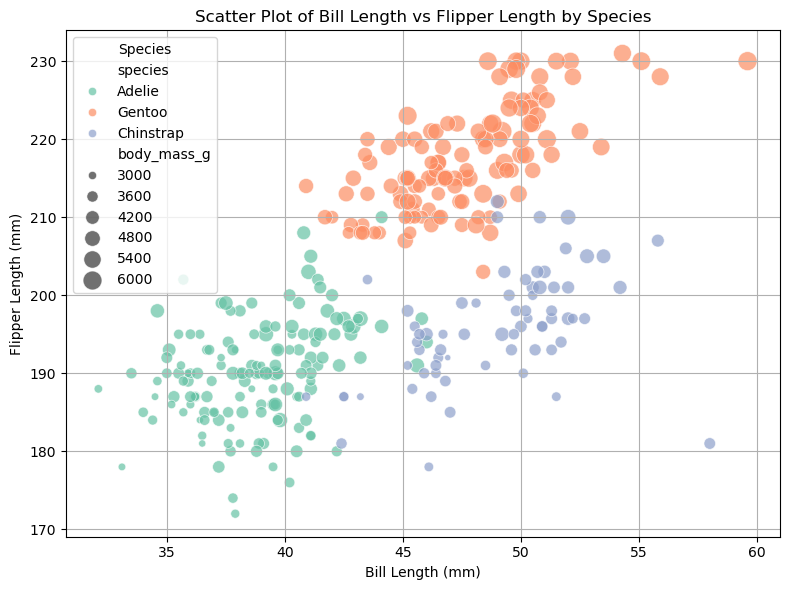
# Use histplot on the diagonal instead of KDE to avoid rendering issues with fill_between
# Step 1: Select relevant columns
features = ['bill_length_mm', 'bill_depth_mm', 'flipper_length_mm', 'body_mass_g', 'species']
# Step 2: Drop rows with missing values in any of the selected columns
df_pairplot_clean = df_pp[features].dropna()
sns.pairplot(df_pairplot_clean, hue='species', corner=True, palette='Set2', diag_kind='hist')
plt.suptitle("Pair Plot of Penguin Features by Species", y=1.02)
plt.show()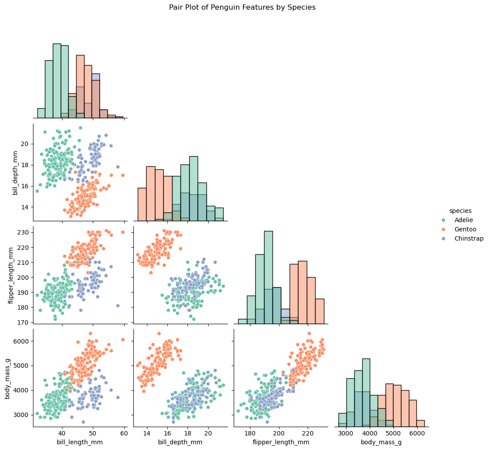
# Select numerical features relevant for clustering
numeric_features = ['bill_length_mm', 'bill_depth_mm', 'flipper_length_mm', 'body_mass_g']
df_hk_clean = df_pp[numeric_features].dropna()
# Create histogram/KDE plots to check feature distributions
plt.figure(figsize=(12, 8))
for i, col in enumerate(numeric_features, 1):
plt.subplot(2, 2, i)
sns.histplot(df_hk_clean[col], kde=True, color='steelblue')
plt.title(f"Distribution of {col.replace('_', ' ').title()}")
plt.xlabel(col)
plt.ylabel("Frequency")
plt.tight_layout()
plt.suptitle("Histogram and KDE Plots of Numerical Features", y=1.03)
plt.show()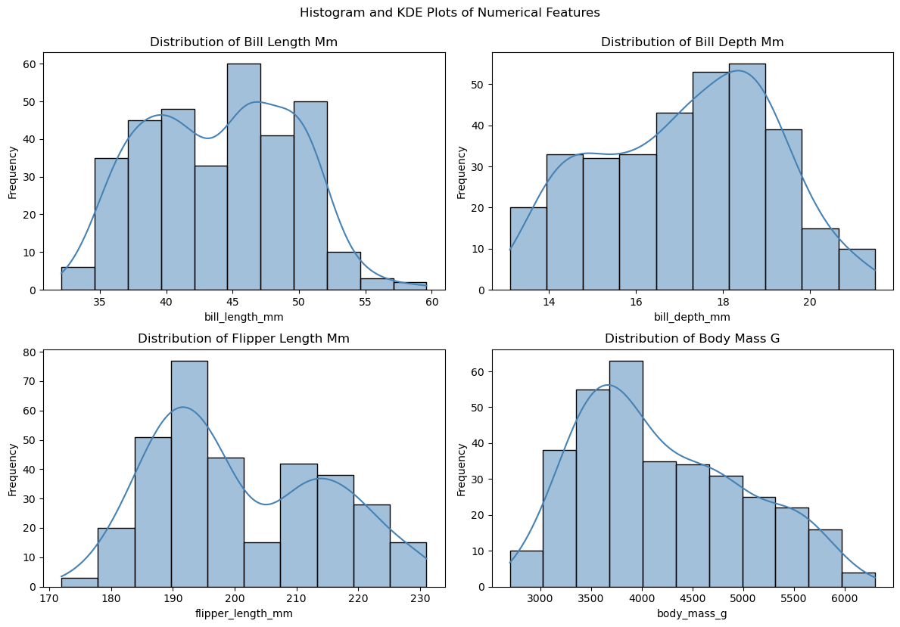
corr_matrix = df_hk_clean .corr()
# Plot heatmap
plt.figure(figsize=(8, 6))
sns.heatmap(corr_matrix, annot=True, cmap='coolwarm', fmt=".2f", linewidths=0.5, square=True)
plt.title("Correlation Heatmap of Penguin Features")
plt.show()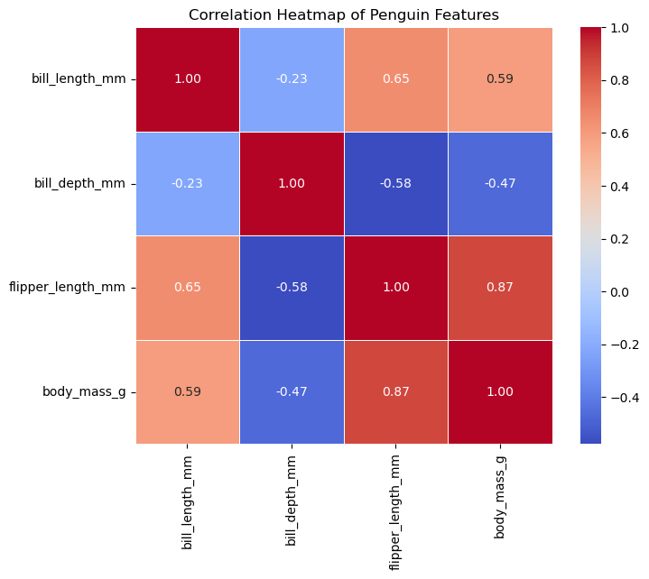
def initialize_centroids(X, k, seed=42):
np.random.seed(seed)
random_indices = np.random.choice(X.shape[0], k, replace=False)
return X[random_indices]
def assign_clusters(X, centroids):
distances = np.linalg.norm(X[:, np.newaxis] - centroids, axis=2) # shape: (n_samples, k)
return np.argmin(distances, axis=1)
def update_centroids(X, labels, k):
return np.array([X[labels == i].mean(axis=0) for i in range(k)])
def compute_wcss(X, labels, centroids):
return sum(np.sum((X[labels == i] - centroids[i]) ** 2) for i in range(len(centroids)))
def kmeans_with_tracking(X, k, max_iters=100, seed=42, plot_steps=True):
centroids = initialize_centroids(X, k, seed)
history = {'centroids': [centroids.copy()], 'labels': []}
for _ in range(max_iters):
labels = assign_clusters(X, centroids)
history['labels'].append(labels.copy())
new_centroids = update_centroids(X, labels, k)
if np.allclose(centroids, new_centroids):
break
centroids = new_centroids
history['centroids'].append(centroids.copy())
final_wcss = compute_wcss(X, labels, centroids)
if plot_steps:
n_steps = len(history['labels'])
n_cols = 5
n_rows = int(np.ceil(n_steps / n_cols))
fig, axes = plt.subplots(n_rows, n_cols, figsize=(4 * n_cols, 4 * n_rows))
axes = axes.flatten()
for i in range(n_steps):
axes[i].scatter(X[:, 0], X[:, 1], c=history['labels'][i], cmap='viridis', s=30)
axes[i].scatter(history['centroids'][i][:, 0], history['centroids'][i][:, 1],
c='red', s=100, marker='X')
axes[i].set_title(f"Iteration {i + 1}")
for j in range(n_steps, n_rows * n_cols):
axes[j].axis('off')
plt.tight_layout()
plt.show()
return centroids, labels, final_wcssfrom sklearn.preprocessing import StandardScaler, LabelEncoder
from sklearn.metrics import adjusted_rand_score
# 1. Prepare the data
df_pp_scale = df_pp[['bill_length_mm', 'flipper_length_mm']].dropna()
# 2. Standardize the features
scaler = StandardScaler()
X_scaled = scaler.fit_transform(df_pp_scale)
# 3. Encode ground truth species labels
le = LabelEncoder()
true_labels = le.fit_transform(df_pp['species'])
# 4. Apply the algorithm to the standardized data
centroids_custom, labels_custom, wcss_custom = kmeans_with_tracking(X_scaled, k=3)
ari_custom = adjusted_rand_score(true_labels, labels_custom)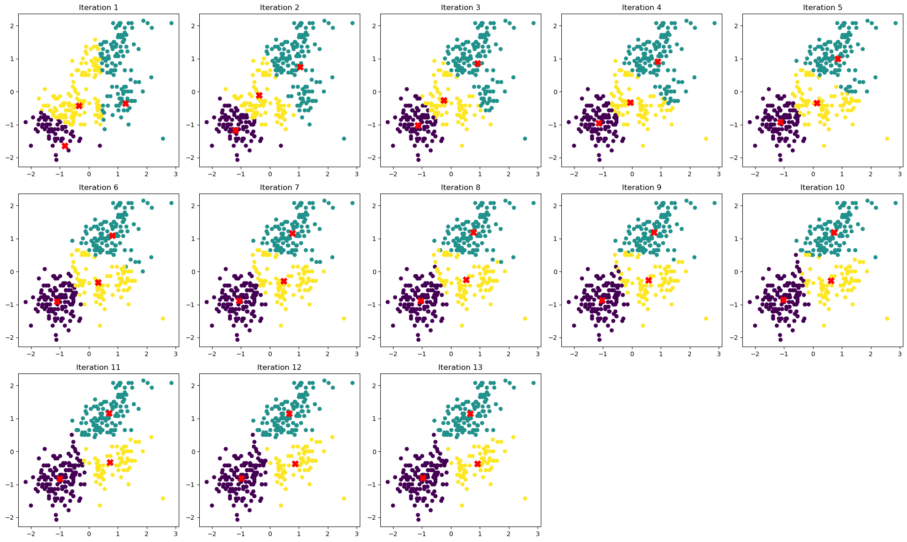
import matplotlib.pyplot as plt
from matplotlib.animation import FuncAnimation
import numpy as np
# Assume you already ran this:
# centroids_custom, labels_custom, wcss_custom = kmeans_with_tracking(X_scaled, k=3, plot_steps=False)
# Regenerate history from your tracking function
def get_kmeans_history(X, k, max_iters=20, seed=42):
centroids = initialize_centroids(X, k, seed)
history = {'centroids': [centroids.copy()], 'labels': []}
for _ in range(max_iters):
labels = assign_clusters(X, centroids)
history['labels'].append(labels.copy())
new_centroids = update_centroids(X, labels, k)
if np.allclose(centroids, new_centroids):
break
centroids = new_centroids
history['centroids'].append(centroids.copy())
return history
history = get_kmeans_history(X_scaled, k=3)
# === Animate ===
fig, ax = plt.subplots(figsize=(8, 6))
sc = ax.scatter(X_scaled[:, 0], X_scaled[:, 1], c=history['labels'][0], cmap='viridis', s=30)
centroid_sc = ax.scatter(history['centroids'][0][:, 0], history['centroids'][0][:, 1],
c='red', s=100, marker='X')
ax.set_xlim(X_scaled[:, 0].min() - 0.5, X_scaled[:, 0].max() + 0.5)
ax.set_ylim(X_scaled[:, 1].min() - 0.5, X_scaled[:, 1].max() + 0.5)
ax.set_title("Animated K-Means (Custom Implementation)")
ax.set_xlabel("Standardized Bill Length")
ax.set_ylabel("Standardized Flipper Length")
def update(frame):
sc.set_array(np.array(history['labels'][frame]))
centroid_sc.set_offsets(history['centroids'][frame])
return sc, centroid_sc
ani = FuncAnimation(fig, update, frames=len(history['labels']), interval=800, repeat=False)
plt.show()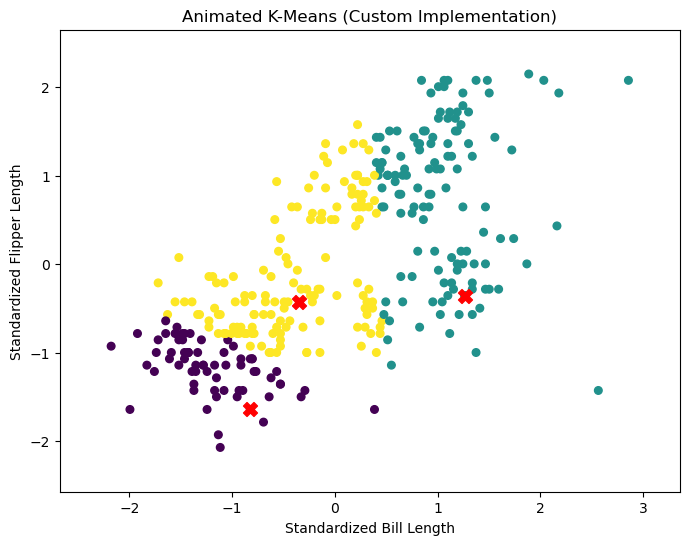
ani.save("kmeans_animation.gif", writer="pillow")print(f"Centroids (Custom K-Means):\n{centroids_custom}")
print(f"Custom K-Means WCSS: {wcss_custom:.2f}")
print(f"Custom K-Means Adjusted Rand Index: {ari_custom:.4f}")Centroids (Custom K-Means):
[[-0.96427851 -0.80518575]
[ 0.66403058 1.15087842]
[ 0.9235766 -0.37501448]]
Custom K-Means WCSS: 154.85
Custom K-Means Adjusted Rand Index: 0.8834from sklearn.cluster import KMeans
X = df_pp_scale .values
scaler = StandardScaler()
X_scaled1 = scaler.fit_transform(X)
# Step 3: Encode species labels numerically for comparison
le = LabelEncoder()
true_labels = le.fit_transform(df_clean['species'])
# Step 4: Apply scikit-learn's built-in KMeans
kmeans_builtin = KMeans(n_clusters=3, random_state=42, n_init=10)
builtin_labels = kmeans_builtin.fit_predict(X_scaled1)
# Step 5: Evaluate with Adjusted Rand Index (ARI)
ari_score = adjusted_rand_score(true_labels, builtin_labels)
# Output: Centroids and WCSS for built-in KMeans
centroids_builtin = kmeans_builtin.cluster_centers_
wcss_builtin = kmeans_builtin.inertia_
plt.figure(figsize=(8, 6))
plt.scatter(X_scaled1[:, 0], X_scaled1[:, 1], c=builtin_labels, cmap='viridis', s=30)
plt.scatter(centroids_builtin[:, 0], centroids_builtin[:, 1], c='red', s=100, marker='X')
plt.title("K-Means Clustering (scikit-learn)")
plt.xlabel("Standardized Bill Length")
plt.ylabel("Standardized Flipper Length")
plt.grid(True)
plt.show()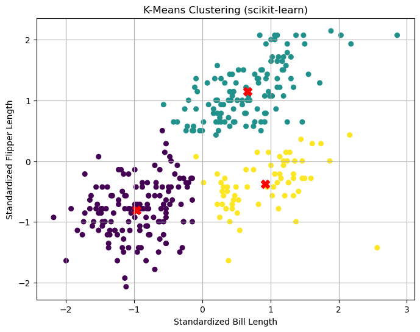
print(f"Centroids (Scikit-learn KMeans):\n{centroids_builtin}")
print(f"Scikit-learn KMeans Adjusted Rand Index: {ari_score:.4f}")
print(f"Scikit-learn KMeans WCSS: {wcss_builtin:.2f}")Centroids (Scikit-learn KMeans):
[[-0.96427851 -0.80518575]
[ 0.66403058 1.15087842]
[ 0.9235766 -0.37501448]]
Scikit-learn KMeans Adjusted Rand Index: 0.8834
Scikit-learn KMeans WCSS: 154.85# Comparison table between custom and scikit-learn KMeans
comparison_df = pd.DataFrame({
'Metric': ['WCSS', 'Adjusted Rand Index'],
'Custom K-Means': [
f"{wcss_custom:.2f}",
f"{ari_custom:.4f}"
],
'Scikit-learn KMeans': [
f"{wcss_builtin:.2f}",
f"{ari_score:.4f}"
]
})
comparison_df| Metric | Custom K-Means | Scikit-learn KMeans | |
|---|---|---|---|
| 0 | WCSS | 154.85 | 154.85 |
| 1 | Adjusted Rand Index | 0.8834 | 0.8834 |
from sklearn.metrics import silhouette_score
# Function to calculate WCSS and silhouette score for a range of K values
def evaluate_kmeans(X, k_range):
wcss = []
silhouette_scores = []
for k in k_range:
kmeans = KMeans(n_clusters=k, random_state=42, n_init=10)
labels = kmeans.fit_predict(X)
# Calculate WCSS
wcss.append(kmeans.inertia_)
# Calculate silhouette score
if k > 1: # Silhouette score is undefined for k=1
silhouette_scores.append(silhouette_score(X, labels))
else:
silhouette_scores.append(None)
return wcss, silhouette_scores
k_range = range(2, 8) # Testing K from 2 to 7
wcss, silhouette_scores = evaluate_kmeans(X_scaled1, k_range)
print("WCSS for different K values:", wcss)
print("Silhouette Scores for different K values:", silhouette_scores)
# Plot results
fig, ax = plt.subplots(1, 2, figsize=(12, 5))
# Plot WCSS
ax[0].plot(k_range, wcss, marker='o')
ax[0].set_title('WCSS vs Number of Clusters (K)')
ax[0].set_xlabel('Number of Clusters (K)')
ax[0].set_ylabel('WCSS')
ax[0].set_xticks(list(k_range))
for x, y in zip(k_range, wcss):
ax[0].text(x, y, f"{y:.1f}", ha='center', va='bottom', fontsize=9)
# Plot Silhouette Scores
ax[1].plot(k_range, silhouette_scores, marker='o', color='green')
ax[1].set_title('Silhouette Score vs Number of Clusters (K)')
ax[1].set_xlabel('Number of Clusters (K)')
ax[1].set_ylabel('Silhouette Score')
ax[1].set_xticks(list(k_range))
for x, y in zip(k_range, silhouette_scores):
ax[1].text(x, y, f"{y:.2f}", ha='center', va='bottom', fontsize=9)
plt.tight_layout()
plt.show()WCSS for different K values: [243.1727902430793, 154.84546009071224, 116.22992785055912, 89.8787514461375, 77.15139118747717, 65.76329426688733]
Silhouette Scores for different K values: [0.5388755534650435, 0.518869393287823, 0.5040149452257723, 0.43335050630380545, 0.4007298336057708, 0.41010401090116616]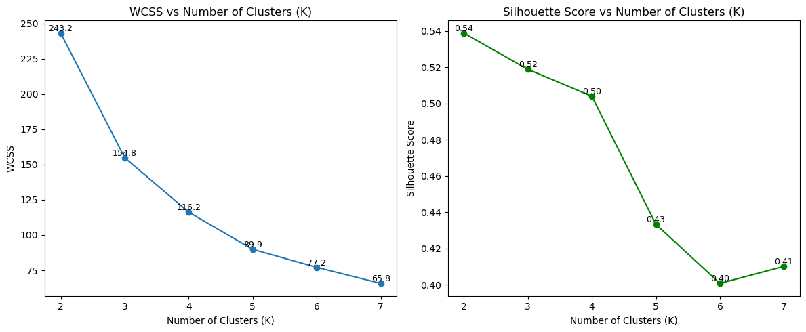
# Identify the optimal number of clusters using the "elbow" in WCSS and the maximum silhouette score
# Find the "elbow" point in WCSS (where the decrease in WCSS slows down)
# A simple approach: look for the point where the relative decrease drops below a threshold
wcss_diff = np.diff(wcss)
wcss_diff_ratio = np.abs(wcss_diff / wcss[:-1])
elbow_threshold = 0.5 # You can adjust this threshold
elbow_candidates = np.where(wcss_diff_ratio < elbow_threshold)[0]
if len(elbow_candidates) > 0:
optimal_k_elbow = k_range[elbow_candidates[0] + 1]
else:
optimal_k_elbow = k_range[0]
# Find the number of clusters with the highest silhouette score
silhouette_scores_valid = [s for s in silhouette_scores if s is not None]
optimal_k_silhouette = k_range[np.argmax(silhouette_scores_valid) + 1] # +1 because k_range starts at 2
print(f"Optimal K by Elbow Method (WCSS): {optimal_k_elbow}")
print(f"Optimal K by Maximum Silhouette Score: {optimal_k_silhouette}")Optimal K by Elbow Method (WCSS): 3
Optimal K by Maximum Silhouette Score: 3import numpy as np
import pandas as pd
# Set seed for reproducibility
np.random.seed(42)
# Generate random data
n = 100
x1 = np.random.uniform(-3, 3, n)
x2 = np.random.uniform(-3, 3, n)
# Define a wiggly nonlinear boundary
boundary = np.sin(4 * x1) + x1
# Assign labels based on position relative to the boundary
y = (x2 > boundary).astype(int) # 1 if above boundary, 0 otherwise
# Create DataFrame
dat = pd.DataFrame({
'x1': x1,
'x2': x2,
'y': y
})
dat['y'] = dat['y'].astype('category')
# Preview the dataset
print(dat.head()) x1 x2 y
0 -0.752759 -2.811425 0
1 2.704286 0.818462 0
2 1.391964 -1.113864 0
3 0.591951 0.051424 0
4 -2.063888 2.445399 1import matplotlib.pyplot as plt
plt.figure(figsize=(8, 6))
plt.scatter(dat['x1'], dat['x2'], c=dat['y'].cat.codes, cmap='coolwarm', s=50, edgecolor='k', alpha=0.8)
# Draw the wiggly boundary
x1_sorted = np.sort(dat['x1'])
boundary_sorted = np.sin(4 * x1_sorted) + x1_sorted
plt.plot(x1_sorted, boundary_sorted, color='black', linewidth=2, label='Boundary: sin(4x1) + x1')
plt.xlabel('x1')
plt.ylabel('x2')
plt.title('Scatter Plot of x1 vs x2 Colored by y')
plt.grid(True)
plt.legend()
plt.show()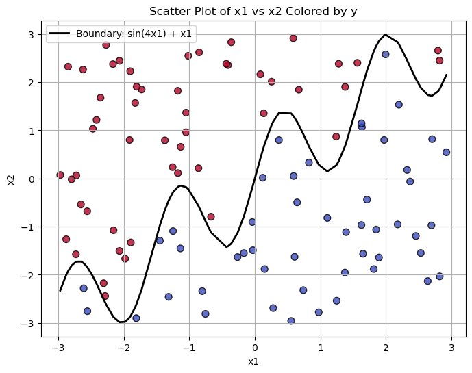
# Generate test dataset using a different seed
np.random.seed(7)
n = 100
x1_test = np.random.uniform(-3, 3, n)
x2_test = np.random.uniform(-3, 3, n)
boundary_test = np.sin(4 * x1_test) + x1_test
y_test = (x2_test > boundary_test).astype(int)
# Create DataFrame
test_dat = pd.DataFrame({
'x1': x1_test,
'x2': x2_test,
'y': pd.Categorical(y_test)
})
print(test_dat.head())
# Plot the test dataset with boundary
plt.figure(figsize=(8, 6))
plt.scatter(test_dat['x1'], test_dat['x2'], c=test_dat['y'].cat.codes, cmap='coolwarm', s=50, edgecolor='k', alpha=0.8)
# Plot the boundary line
x1_sorted = np.sort(test_dat['x1'])
boundary_sorted = np.sin(4 * x1_sorted) + x1_sorted
plt.plot(x1_sorted, boundary_sorted, color='black', linewidth=2, label='Boundary: sin(4x1) + x1')
# Labels and title
plt.xlabel('x1')
plt.ylabel('x2')
plt.title('Test Set: x1 vs x2 Colored by y')
plt.grid(True)
plt.legend()
plt.show() x1 x2 y
0 -2.542150 -2.584488 0
1 1.679513 -0.857576 0
2 -0.369545 1.876977 1
3 1.340791 -0.433771 0
4 2.867937 0.599127 0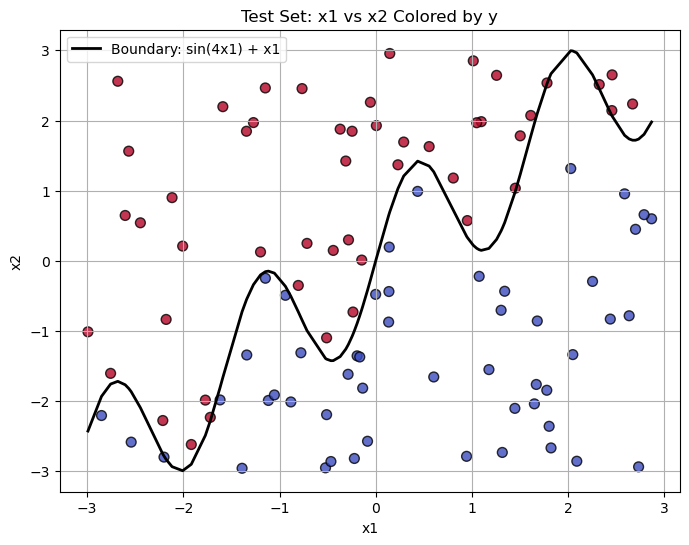
from collections import Counter
def euclidean_distance(a, b):
"""Compute Euclidean distance between two points a and b"""
return np.sqrt(np.sum((a - b)**2))
def knn_predict(X_train, y_train, X_test, k=3):
"""
Predict labels for X_test using KNN based on X_train and y_train.
Parameters:
- X_train: array of shape (n_train, n_features)
- y_train: array of shape (n_train,)
- X_test: array of shape (n_test, n_features)
- k: number of neighbors to use
Returns:
- predictions: array of shape (n_test,)
"""
predictions = []
for test_point in X_test:
# Compute distances from test_point to all training points
distances = [euclidean_distance(test_point, train_point) for train_point in X_train]
# Get indices of the k closest points
k_indices = np.argsort(distances)[:k]
# Retrieve the corresponding labels
k_labels = [y_train[i] for i in k_indices]
# Use majority vote to determine prediction
most_common = Counter(k_labels).most_common(1)[0][0]
predictions.append(most_common)
return np.array(predictions)
# Assume you already have dat (train set) and test_dat (test set)
X_train = dat[['x1', 'x2']].values
y_train = dat['y'].astype(int).values
X_test = test_dat[['x1', 'x2']].values
y_test = test_dat['y'].astype(int).values
# Predict using k = 5
y_pred = knn_predict(X_train, y_train, X_test, k=5)
# Evaluate accuracy
accuracy = np.mean(y_pred == y_test)
print(f"KNN (handwritten) accuracy with k=5: {accuracy:.2%}")
KNN (handwritten) accuracy with k=5: 88.00%import matplotlib.pyplot as plt
plt.figure(figsize=(8, 6))
plt.scatter(X_test[:, 0], X_test[:, 1], c=y_pred, cmap='coolwarm', s=50, edgecolor='k', alpha=0.8)
plt.xlabel('x1')
plt.ylabel('x2')
plt.title('Test Set Predictions (Handwritten KNN)')
plt.grid(True)
plt.show()
fig, ax = plt.subplots(1, 2, figsize=(14, 6))
# True labels
ax[0].scatter(X_test[:, 0], X_test[:, 1], c=y_test, cmap='coolwarm', s=50, edgecolor='k', alpha=0.8)
ax[0].set_title("True Labels (Test Set)")
ax[0].set_xlabel("x1")
ax[0].set_ylabel("x2")
ax[0].grid(True)
# Predicted labels
ax[1].scatter(X_test[:, 0], X_test[:, 1], c=y_pred, cmap='coolwarm', s=50, edgecolor='k', alpha=0.8)
ax[1].set_title("Predicted Labels (KNN, k=5)")
ax[1].set_xlabel("x1")
ax[1].set_ylabel("x2")
ax[1].grid(True)
plt.tight_layout()
plt.show()
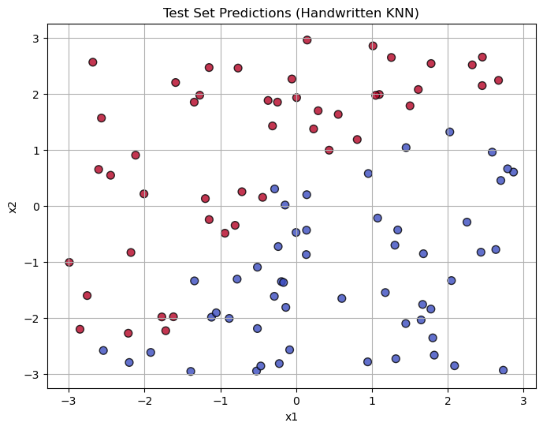
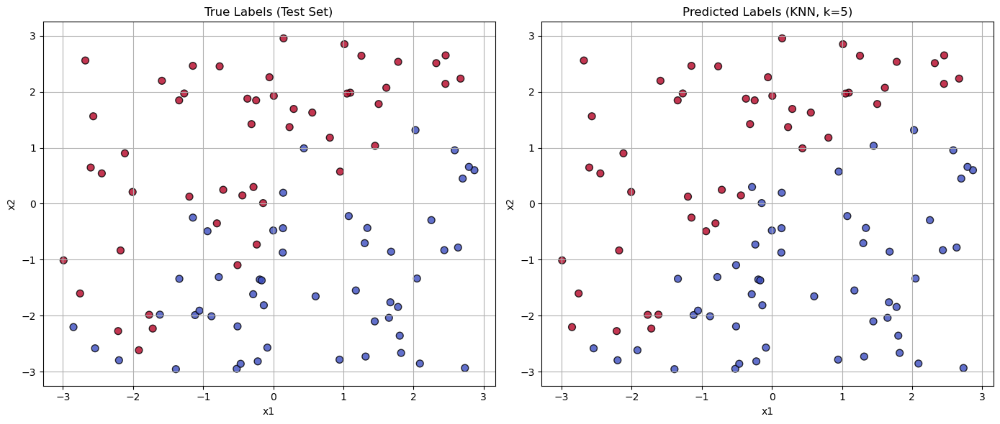
# Requires: X_train, y_train, knn model (fitted or custom)
from matplotlib.colors import ListedColormap
# Create a meshgrid of points
h = 0.05
x_min, x_max = X_train[:, 0].min() - 1, X_train[:, 0].max() + 1
y_min, y_max = X_train[:, 1].min() - 1, X_train[:, 1].max() + 1
xx, yy = np.meshgrid(np.arange(x_min, x_max, h),
np.arange(y_min, y_max, h))
grid_points = np.c_[xx.ravel(), yy.ravel()]
# Predict using handwritten or sklearn KNN
Z = knn_predict(X_train, y_train, grid_points, k=5)
Z = Z.reshape(xx.shape)
# Plot
plt.figure(figsize=(8, 6))
plt.contourf(xx, yy, Z, cmap=ListedColormap(['#FFAAAA', '#AAAAFF']), alpha=0.4)
plt.scatter(X_train[:, 0], X_train[:, 1], c=y_train, cmap='coolwarm', edgecolor='k')
plt.title("KNN Decision Boundary (k=5)")
plt.xlabel("x1")
plt.ylabel("x2")
plt.grid(True)
plt.show()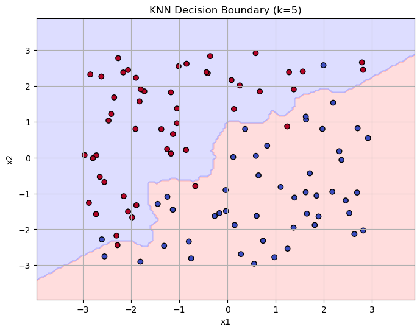
from sklearn.neighbors import KNeighborsClassifier
from sklearn.metrics import accuracy_score
# Prepare training and test data
X_train = dat[['x1', 'x2']].values
y_train = dat['y'].astype(int).values
X_test = test_dat[['x1', 'x2']].values
y_test = test_dat['y'].astype(int).values
# Instantiate and fit the KNN classifier
knn_model = KNeighborsClassifier(n_neighbors=5)
knn_model.fit(X_train, y_train)
# Predict on the test data
y_pred_sklearn = knn_model.predict(X_test)
# Evaluate accuracy
accuracy_sklearn = accuracy_score(y_test, y_pred_sklearn)
print(f"KNN (scikit-learn) accuracy with k=5: {accuracy_sklearn:.2%}")KNN (scikit-learn) accuracy with k=5: 88.00%k_values = range(1, 31)
acc_custom = []
acc_sklearn = []
for k in k_values:
y_pred_c = knn_predict(X_train, y_train, X_test, k)
y_pred_s = KNeighborsClassifier(n_neighbors=k).fit(X_train, y_train).predict(X_test)
acc_custom.append(np.mean(y_pred_c == y_test))
acc_sklearn.append(np.mean(y_pred_s == y_test))
# Plot
plt.plot(k_values, acc_custom, label='Handwritten KNN')
plt.plot(k_values, acc_sklearn, label='scikit-learn KNN', linestyle='--')
plt.xlabel("k")
plt.ylabel("Accuracy")
plt.title("Accuracy vs. k (Handwritten vs. scikit-learn)")
plt.legend()
plt.grid(True)
plt.show()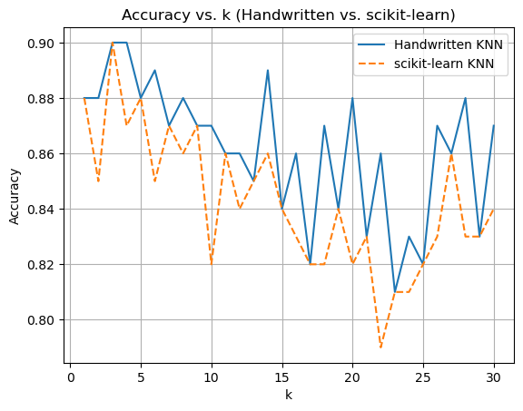
from sklearn.metrics import confusion_matrix, ConfusionMatrixDisplay, classification_report
# 1. Confusion Matrix – Handwritten KNN
cm_custom = confusion_matrix(y_test, y_pred)
disp_custom = ConfusionMatrixDisplay(confusion_matrix=cm_custom)
disp_custom.plot(cmap='Blues')
plt.title("Confusion Matrix - Handwritten KNN (k=5)")
plt.show()
# 2. Confusion Matrix – scikit-learn KNN
cm_sklearn = confusion_matrix(y_test, y_pred_sklearn)
disp_sklearn = ConfusionMatrixDisplay(confusion_matrix=cm_sklearn)
disp_sklearn.plot(cmap='Greens')
plt.title("Confusion Matrix - scikit-learn KNN (k=5)")
plt.show()
# 3. Classification Report – Handwritten KNN
print(" Classification Report - Handwritten KNN (k=5)")
print(classification_report(y_test, y_pred, target_names=["Class 0", "Class 1"]))
# 4. Classification Report – scikit-learn KNN
print(" Classification Report - scikit-learn KNN (k=5)")
print(classification_report(y_test, y_pred_sklearn, target_names=["Class 0", "Class 1"]))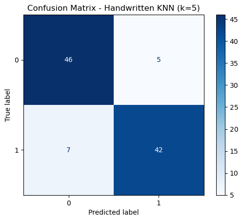
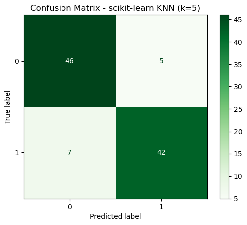
Classification Report - Handwritten KNN (k=5)
precision recall f1-score support
Class 0 0.87 0.90 0.88 51
Class 1 0.89 0.86 0.88 49
accuracy 0.88 100
macro avg 0.88 0.88 0.88 100
weighted avg 0.88 0.88 0.88 100
Classification Report - scikit-learn KNN (k=5)
precision recall f1-score support
Class 0 0.87 0.90 0.88 51
Class 1 0.89 0.86 0.88 49
accuracy 0.88 100
macro avg 0.88 0.88 0.88 100
weighted avg 0.88 0.88 0.88 100
import numpy as np
import matplotlib.pyplot as plt
from sklearn.neighbors import KNeighborsClassifier
k_values = range(1, 31)
acc_custom = []
acc_sklearn = []
# Prepare data
X_train = dat[['x1', 'x2']].values
y_train = dat['y'].astype(int).values
X_test = test_dat[['x1', 'x2']].values
y_test = test_dat['y'].astype(int).values
# Evaluate both models over k=1 to 30
for k in k_values:
# Handwritten KNN
y_pred_custom = knn_predict(X_train, y_train, X_test, k)
acc_custom.append(np.mean(y_pred_custom == y_test))
# scikit-learn KNN
knn_model = KNeighborsClassifier(n_neighbors=k)
knn_model.fit(X_train, y_train)
y_pred_sklearn = knn_model.predict(X_test)
acc_sklearn.append(np.mean(y_pred_sklearn == y_test))
# Plot results
plt.figure(figsize=(7, 5))
plt.plot(k_values, acc_custom, label='Handwritten KNN', linewidth=2)
plt.plot(k_values, acc_sklearn, label='scikit-learn KNN', linestyle='--')
plt.xlabel('k')
plt.ylabel('Accuracy')
plt.title('Accuracy vs. k (Handwritten vs. scikit-learn)')
plt.legend()
plt.grid(True)
plt.show()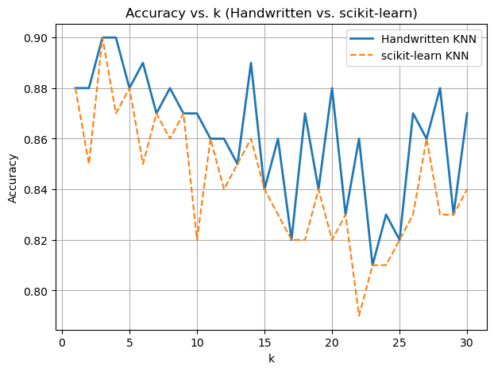
# From your previously computed accuracy list (acc_custom or acc_sklearn)
best_k_custom = k_values[np.argmax(acc_custom)]
best_k_sklearn = k_values[np.argmax(acc_sklearn)]
print(f"Best k (Handwritten): {best_k_custom}")
print(f"Best k (scikit-learn): {best_k_sklearn}")Best k (Handwritten): 3
Best k (scikit-learn): 3